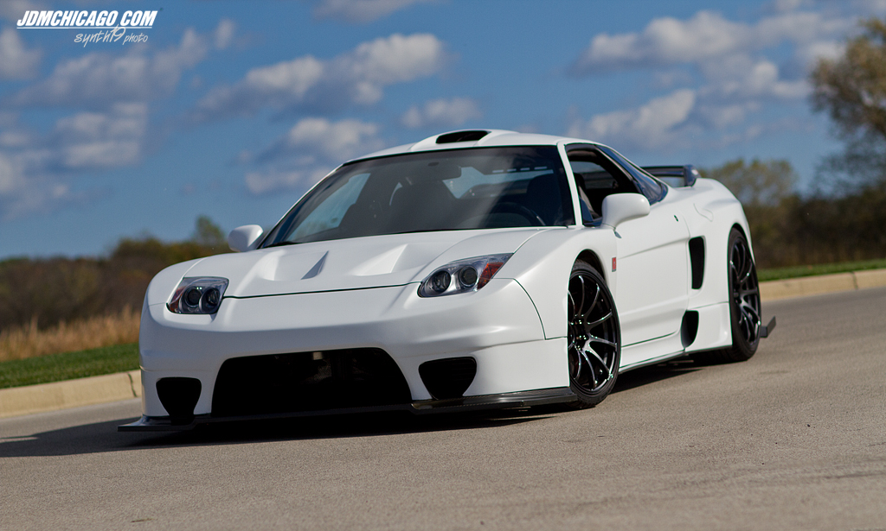
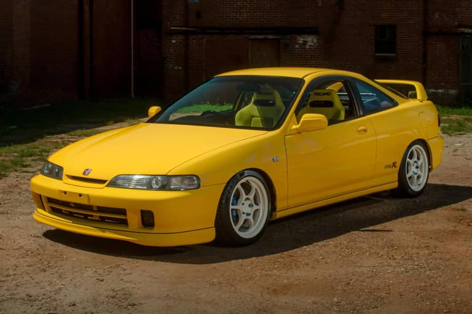
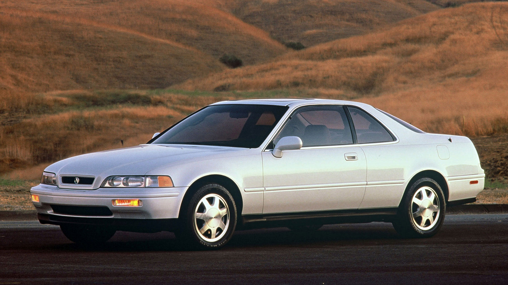
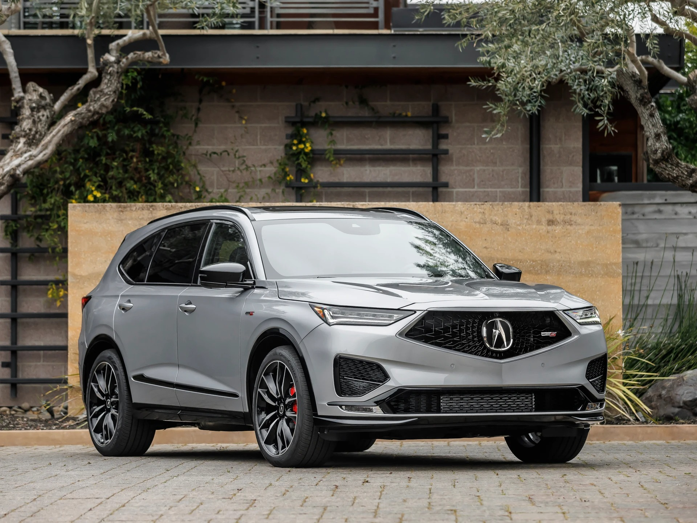
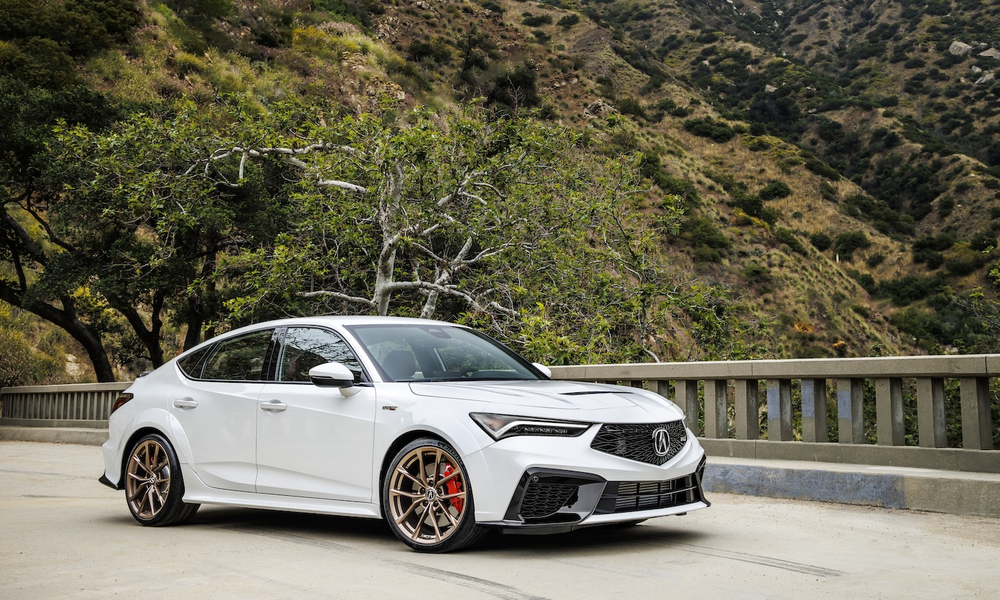
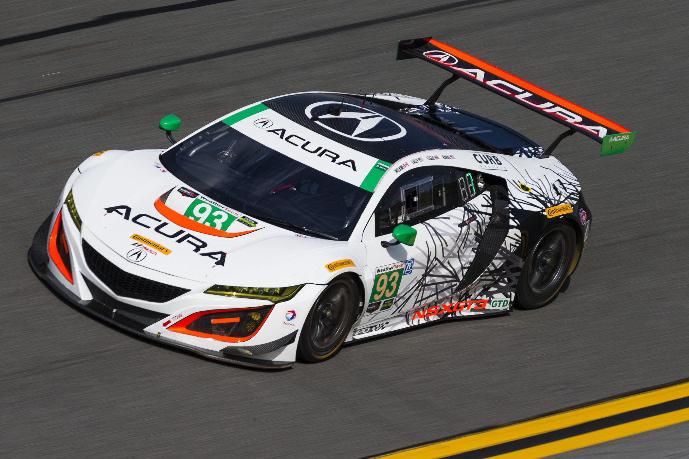

Acura
Precision Crafted Performance
Founded: 1986
Country: Japan
Icon: NSX
First Japanese Luxury
Precision Crafted Performance
In 1986, Honda made automotive history by launching Acura, the first Japanese luxury automotive brand. This bold move would fundamentally change the global luxury car market and force established European competitors to take notice.
The timing was perfect. Japanese cars had earned a reputation for reliability and value, but luxury remained the domain of Mercedes, BMW, and Jaguar. Honda believed there was an opportunity for a brand that combined Japanese reliability with luxury features and performance.
Acura launched with two models: the Integra and the Legend. The Integra was a sporty compact that appealed to younger buyers, while the Legend was a full-sized luxury sedan that competed directly with European offerings. Both were immediate successes, praised for their quality, refinement, and value.
The 1991 NSX changed everything. The brainchild of Honda's F1 program and the legendary driver Ayrton Senna, the NSX was a mid-engine supercar that matched Ferrari and Porsche on performance while offering Honda reliability and everyday usability. It rewrote the supercar rulebook and remains one of the most significant cars ever built.
Through the 1990s and 2000s, Acura expanded its lineup with SUVs like the MDX (which created the three-row luxury SUV segment) and performance models like the Type S variants. The brand's "Precision Crafted Performance" philosophy emphasized engaging driving dynamics, innovative technology, and meticulous attention to detail.
Today, Acura continues to evolve with models like the TLX Type S and the second-generation NSX hybrid supercar. The brand remains committed to its founding principles: performance, precision, and premium value.

1991-2005 | 2016-present
The supercar that changed everything. Developed with input from Ayrton Senna, the NSX combined Ferrari performance with Honda reliability and everyday usability. The first aluminum-bodied production car, it rewrote the supercar rulebook.
"The NSX drives like a car that was developed by someone who understands what drivers want." - Ayrton Senna

1986-2006 | 2023-present
The sporty compact that defined a generation. The Integra, especially the Type R, became a cult classic for its perfect balance, high-revving VTEC engine, and affordable performance.

1986-1995
The car that launched the brand. A full-size luxury sedan that competed with European offerings at a lower price, establishing Acura's reputation.

2000-present
The first three-row luxury SUV, creating a segment and becoming Acura's best-selling model. Combined practicality with sporty handling.

2021-present
The modern performance sedan with turbo V6, SH-AWD, and aggressive styling. Revives the Type S performance legacy.
Variable Valve Timing and Lift Electronic Control. Honda's revolutionary technology that gave engines both efficiency and high-RPM power.
Super Handling All-Wheel Drive. Advanced torque vectoring that sends power to the outside rear wheel during cornering for enhanced agility.
The NSX was the first production car with an all-aluminum monocoque, reducing weight while maintaining rigidity.
The second-generation NSX combined twin-turbo V6 with three electric motors for instant response and torque vectoring.
Acura's distinctive LED headlight design that provided superior illumination while creating a signature look.
Suite of advanced safety and driver assistance technologies including adaptive cruise, collision mitigation, and lane keeping.
Acura's motorsport involvement has been extensive and successful, leveraging Honda's deep racing expertise:
The NSX GT3 has been a competitive customer racing car worldwide, winning in IMSA, Blancpain, and Super GT series. Acura's "Precision Crafted Performance" philosophy is proven on racetracks around the world.
